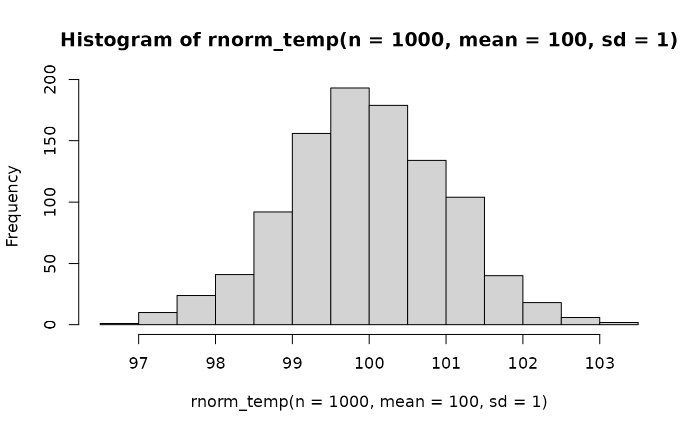
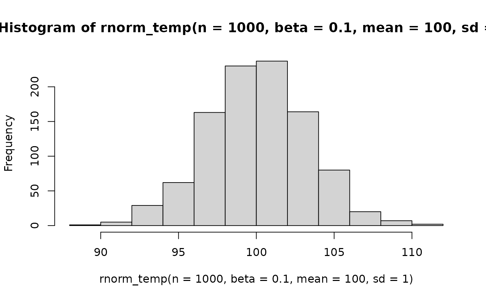

These are basic wrappers around stats::dnorm() and stats::rnorm() to provide shortcut evaluation
of the log-density, density and random generation of a univariate tempered normal
with inverse temperature equal to beta, mean equal to mean and standard deviation equal to sd.
When beta = 1, we recover a regular normal density.
Usage
lnorm_temp(x, beta = 1, mean = 0, sd = 1)
dnorm_temp(x, beta = 1, mean = 0, sd = 1, log = FALSE)
rnorm_temp(n, beta = 1, mean = 0, sd = 1)
lnorm(x, mean = 0, sd = 1)Arguments
- x
Vector of quantiles.
- beta
Inverse temperature parameter \(\beta > 0\).
- mean
Vector of means.
- sd
Vector of standard deviations.
- log
For
dnorm_temp, whether to return the log-density or not (the default).- n
Number of observations.
Value
The preffix l stands for log-density, d for density, and r for sampling.
lnorm gives the log-density of a regular normal without tempering (i.e. \(\beta = 1\)).
See stats::dnorm() for more information.
Details
Tempering a distribution means raising its density to a power \(\beta>0\), known as inverse temperature. Equivalently, we multiply the log-density by \(\beta\): $$f_\beta(x) = f(x)^\beta$$ $$l_\beta(x) = \beta l(x)$$ Consider a univariate normal random variable centered at \(\mu\) with standard deviation \(\sigma\), where \(cte\) represents the normalizing constant $$X ~ N(\mu, \sigma)$$ $$l(x) = -(x-\mu)^2 / 2\sigma^2 + cte$$ Its tempered version is equivalent to rescaling with new standard deviation \(\sigma/\sqrt\beta\) and keeping the same mean parameter: $$l_\beta(x) = \beta l(x) = -\beta(x-\mu)^2 / 2\sigma^2 + cte'$$ $$X|\beta ~ N(\mu, \sigma/\sqrt\beta)$$
Vectorization
The functions inherit vectorization, so can be used for example with
ggplot2::geom_function() to show the flattening effect of tempering
ggplot() +
geom_function(fun = dnorm,
color = "gray65") +
geom_function(fun = dnorm_temp,
args = list(beta = 0.75),
color = "steelblue4") +
geom_function(fun = dnorm_temp,
args = list(beta = 0.5),
color = "darkcyan") +
geom_function(fun = dnorm_temp,
args = list(beta = 0.25),
color = "blueviolet") +
geom_function(fun = dnorm_temp,
args = list(beta = 0.25^2),
color = "maroon4") +
xlim(-6,6) +
theme_classic()Examples
lnorm_temp(x = 0, beta = 0.5, sd = 1)
#> [1] -1.265512
lnorm(0, sd = 1/sqrt(0.5))
#> [1] -1.265512
lnorm(x = 0)
#> [1] -0.9189385
dnorm(x = 0, log = TRUE)
#> [1] -0.9189385
dnorm_temp(x = 5, beta = 1)
#> [1] 1.48672e-06
dnorm(x = 5)
#> [1] 1.48672e-06
rnorm_temp(n = 1000, mean = 100, sd = 1) |> hist()

rnorm_temp(n = 1000, beta = 0.1, mean = 100, sd = 1) |> hist()
